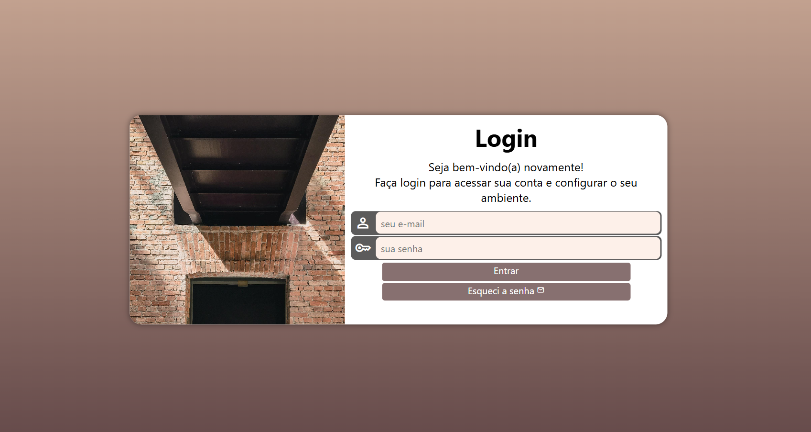

Dilene Carvalho
Sou uma profissional em constante aprendizado, com grande interesse por tecnologia, inovação e desenvolvimento de soluções digitais. Possuo formação em Análise e Desenvolvimento de Sistemas, e venho aprofundando meus estudos em desenvolvimento web, área na qual pretendo atuar.
Minhas Skills
HTML5
90%
CSS3
80%
JavaScript
50%
Python
60%
Comunicação
95%
Trabalho em Equipe
90%
Facilidade em aprender
95%
Formação
2021 - 2023
Universidade Presbiteriana Mackenzie
Análise e Desenvolvimento de Sistemas
Projetos
2022
Projeto Cordel
Projeto construído para praticar efeito paralax em imagens.
Saiba mais...
Projeto desenvolvido com HTML5 e CSS3, responsivo para Mobile, onde praticamos a estilização da página com imagens fixas de fundo (Efeito Parallax) e boas práticas no uso de sombras.

2023
Projeto Android
Projeto construído para praticar conteúdos e imagens dinâmicas.
Saiba mais...
Projeto desenvolvido com HTML5 e CSS3, responsivo para Mobile, onde praticamos diversos conceitos como Âncoras, Menus, Listas e Abreviações, dentre outros.
2023
Projeto Iframes
Projeto construído para praticar o uso de iframes.
Saiba mais...
Mini projeto desenvolvido durante estudo de iframes, onde recriamos a tela de um dispositivo mobile com navegação entre nossas redes sociais. Também foi discutido sobre a usabilidade dos iframes e questões de segurança.

2024
Projeto Login
Projeto construído para praticar o uso de formaulários HTML e Media Queries.
Saiba mais...
Desenvolvemos uma tela de Login para estudo de Formulários em HTML5, e fizemos sua personalização a partir da abordagem Mobile First, com adapatação para outros tamanhos de tela através do uso de Media Queries.